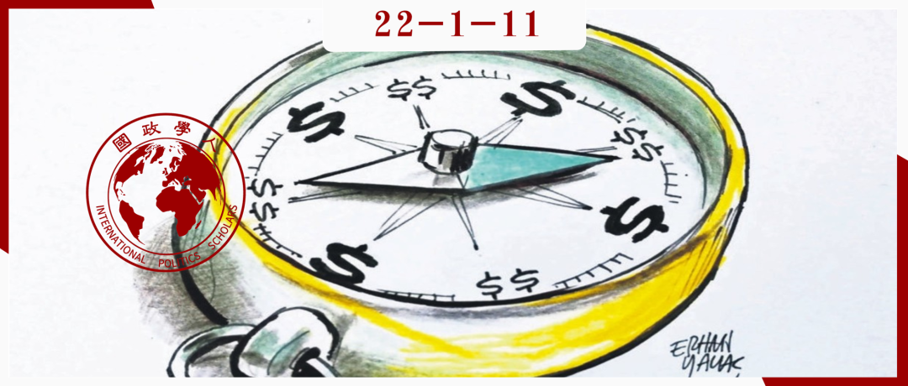

收录于合集 #《国际关系前沿》2022年第1期 23个

作品简介 ****
作者： Joshua Shifrinson，波士顿大学国际关系副教授，主要关注国际安全和外交史的交叉研究，尤其是大国的兴衰和大战略的起源。
编译： 朱忻博（国政学人编译员，爱丁堡大学国际关系硕士）
来源： Joshua Shifrinson (2020). Realism and Peaceful Change: A Structural and Neoclassical Realist First-Cut. The Oxford Handbook of Peaceful Change in International Relations. doi: 10.1093/oxfordhb/9780190097356.013.6
归档： 《国际关系前沿》2022年第1期，总第40期。

导读
本文的理论色彩较强，其主要关注结构现实主义和新古典现实主义理论与国际关系和平变革前景的关系。文章首先理清了两类和平变革，第一类和平变革是指两国或多国之间发生权力分配变化时，它们能够和平处理权力转移。第二类和平变革则更为广泛，其涉及到减少乃至消除国际关系中的暴力因素。为了表明现实主义方法并不反对和平变革，作者深入回顾了当今三种主要现实主义理论流派（防御性现实主义、进攻性现实主义和新古典现实主义），并依据它们各自的核心理论要素提出了一些实现和平变革的可能情况。
总的来说，作者由现实主义理论推导出的第一类和平变革的各种情况较为可信，且在大多数情况后都附以历史上权力转移的案例来辅助说明。尽管译者认为原文在论述进攻性现实主义推导出的和平变革的可能情况时采用的个别例子稍显牵强（碍于字数并未加以编译，如有兴趣请阅读原文），但总体上并不影响“现实主义方法不反对和平变革”这一论点。而对于第二类和平变革，由于变革的根本性，作者承认现实主义理论对其前景的看法较为悲观。但文中也提出了两种可能的情况，如诸多弱国面对共同外部威胁时共同构建一个次级国际体系，在该次级体系内实现和平变革；或是在一个霸权国领导的体系下实现和平变革。虽说这并不是整个国际体系的和平变革，但也是较为有意思的观点，可以拓展关于和平变革讨论的空间。
作为一篇聚焦于国际关系理论的文章，本文观点较为新颖，其挑战了一个广泛存在的看法——现实主义对国际关系和平变革持悲观甚至否定态度，自由主义和建构主义才是和平变革的支持者。作者在文中对结构现实主义和新古典现实主义理论的回顾和深入剖析表明，现实主义方法本质上并不反对和平变革，在特定的情况下，现实主义框架可以导向第一类，甚至是第二类和平变革。本文对和平变革的研究具有创新性意义，若只采用自由主义和建构主义要素讨论和平变革的实现，很容易变成理想化的空中楼阁，没有实际可操作性；而现实主义要素，如不确定性、权力和安全考量的加入，为国际关系和平变革的讨论开辟了更广阔的天地，值得学界关注。此外，在国际权力分配正在发生转移的当今时代，现实主义要素的加入也有助于学者和各国政策制定者更好地分析和判断如何实现权力的和平转移（第一类和平变革），避免战争的悲剧发生。
摘要
结构现实主义和新古典现实主义理论怎么看国际关系和平变革的前景? 尽管自由主义和建构主义学者经常抨击现实主义，认为其低估了和平变革的可能性，但仔细审视现实主义理论后会发现并非如此。特别是当国家之间相距很远或被水域隔开，拥有强大的军力(尤其是核武库)，获得地区霸权，或是拥有特别有利的国内体系时，国家可能会和平地处理与对手的争端，降低国际竞争的强度（至少在理论上如此）。毫无疑问，无政府状态、对相对收益的关注以及国家制衡威胁的倾向，都大大降低了国家间超越竞争的可能性。然而，与传统想法不同的是：结构现实主义和新古典现实主义在本质上并不反对和平变革。
编译
01
导言
国际关系的和平变革是可能的吗？国际关系中对“和平变革”（“peaceful change”）的定义并不明确，其指的是在权力分配转移的过程中，对新国家角色的和平适应，或是国际关系向多元化安全共同体的转变。虽然存在模糊性，但其主要的论点是只要各国将国际机构、良好的国内治理、有利于国际协调的规范和/或经济交流结合起来，就标志着和平变革的可能性，这通常见于自由主义和建构主义国际关系理论。与之相反，由于现实主义对权力、竞争和安全的强调，其被广泛认为与和平变革相对立。然而，有趣的是，现实主义者们并没有普遍做出批评者所宣称的悲观预测，即不是所有现实主义者都认为任何形式的和平变革都是不可能的。诚然，结构现实主义和新古典现实主义的观点承认国际政治仍存在竞争，但这并不是批评者所夸大其词的那种相互残杀的国际冲突。现实主义理论的核心原则分别并共同确定了和平变革成为可能的条件。
02
什么是和平变革
本章首先厘清了两类不同形式的和平变革：两个或多个大国之间关系的变革，和国际关系基本运作原则的变革。后面的章节讨论了结构和新古典现实主义对两类变革的预期。
1、第一类和平变革
第一类和平变革是指权力分配转移时国家间关系的和平调整。 国家间权力的转移会从两个方面引发国际政治冲突。第一，权力分配的不确定性导致各国错误判断使用武力的吸引力，并错误估计它们在谈判桌上而非战场上能获得什么。第二，权力转移会导致相对崛起的国家寻求更多的影响力、权威和安全，就像相对衰落的国家希望保持它们目前所享有的影响力、安全和权威一样。在这类情形中，和平变革是指在不诉诸于持续武力的情况下，调节两个或多个国家之间的权力转移。这意味着崛起国和衰落国在权力分配转移时成功地避免了战争。19世纪英国与美国之间的权力转移是第一类和平变革的典型例子，美国和平地取代英国成为了大西洋世界的主导行为体。
2、第二类和平变革
与第一类变革相比，第二类和平变革的范围更广，其关注的是国家间关系能否实现国际关系中暴力因素显著减少（如果不能消除的话）的转变。 这种变革方式在最低限度的情况下将涉及裁决国际争端的正规化机制;在最高限度的情况下，它将使国际政治的“转型变革”（“transformational change”）成为可能——摆脱无政府状态这一国际政治的中心组织原则，国际政治行为体（不一定包括国家）将在无需担心武力威胁的情况下基于正义的准则和原则互动。
03
回顾现实主义
为了解结构现实主义和新古典现实主义对两类和平变革的具体影响，回顾它们的基本原则是有帮助的。结构现实主义和新古典现实主义都有一个前提，即由于没有一个全球性霸权，国际政治处于无政府状态中，在这种情况下，国家是主要的行为体。结构现实主义和新古典现实主义理论都认为，国家的最低目标是作为主权单位生存，国家的物质力量主要由经济和军事资源组成。这种情况导致了国际体系的竞争基调。在没有主权来裁决争端的情况下，急于维护自身利益的国家只能依靠算计和结盟来应对其他行为体构成的潜在威胁。因此，面对强大的外部势力，国家倾向于通过获取和聚集经济和军事资源来（对其）加以制衡。但制衡可能在任何给定的时刻失败，不过通过多数行为体共同阻止（generally denying）任何一个国家形成永久霸权，随着时间的推移国际体系会趋向均势，从而显现出使无政府状态永久化的趋势。在这个体系中，一个竞争的基线被规范化并被接受。
1、结构现实主义
（1）防御性现实主义
从这里开始，结构现实主义和新古典现实主义开始分化。结构现实主义由两部分构成，一是防御性现实主义，一是进攻性现实主义。防御性现实主义建立在生存是国家的基本目标这一想法之上，因此在国际关系中国家的主要目的是寻求安全。防御性现实主义者认为，大多数情况下，寻求安全的国家会从（冲突的）边缘后退。由于国际社会的无政府状态，局部竞争可能发生，但国家厌恶风险的本性和安全困境的易变性限制了暴力本身。
（2）进攻性现实主义
进攻性现实主义在几个方面与防御性现实主义不同。第一，进攻性现实主义假定国家不可避免地无法确定其他国家的意图，即使是寻求安全的行为体也没有办法表明它们的善意目标。第二，国家之间——除非被大片水域隔开——总是会有通过武力伤害对方的能力。第三，考虑到国际社会的无政府状态，这些动态意味着权力和安全在功能上是相同的:安全取决于通过最大化权力来遏制威胁。因此，所有行为体最终都将（获取）权力作为通往安全与生存的最可靠途径。
2、新古典现实主义
进攻性和防御性的结构现实主义者都将竞争视为国际体系结构及体系内部实力分配的产物。相比之下，新古典现实主义将不同国家和领导人的独特特征与结构性变量结合了起来。同结构现实主义一样，新古典现实主义学者认为无政府状态普遍存在并产生了对他者意图广泛的不确定性。与防御性现实主义类似，新古典现实主义方法也假定对国际侵略可能存在有意义的限制。
与结构现实主义关于国家行为通常来自体系和结构性力量的主张不同，新古典现实主义认为这种趋势并不像人们可能预期的那样普遍。除非威胁明确且国际环境受限，否则没有先验的理由期待国家遵循体系力量行事。相反，一系列单位和个人层面的变量可以影响国家何时以及如何与其他行为体竞争或合作，如领导人的政治态度和联盟偏好、战略文化和意识形态、国家- 社会关系以及国内制度。
04
**第一类和平变革的前景
**
1、防御性现实主义
三个理论中， 防御性现实主义对第一类和平变革的前景最为乐观。因为防御性现实主义假设国家寻求安全而非权力，这使国家重视所享受的安全，并担心失去它，这有助于和平变革。 例如，当考虑战争时，崛起或衰落的国家可能不仅会问它们从竞争中可能得到什么，还会考虑它们可能失去的安全，这能够为冲突刹车。
地理和军事技术在其中起着关键作用。从地理上讲，距离较远或被防御性屏障(如海洋、山脉)隔开的国家应该比那些距离较近或缺乏自然地理防御的国家更容易适应权力的转移。远距离和防御性屏障可能会产生以下效果:(1)使各国更倾向于维持现状;(2)放弃战争——因为使用武力的困难——这是一种比其他手段更不具吸引力的策略;(3)减少外部威胁的紧迫性，从而限制不安全螺旋式上升的强度。相反，没有防御性边界或彼此相邻的国家更容易受到侵略，而且由于威胁的紧迫性，可能会面临更严重的安全困境。其结果可能会使和平变革更加困难。一战前英国对德国和美国崛起截然不同的态度或许是较好的例子，因为隔着大西洋，英国领导人可以默许（尽管并非没有紧张局势）美国在西半球的主导地位，并有理由相信美国的崛起不会威胁到英国的生存。相比之下，地理因素为英德两国走向冲突铺路。地理的临近性不仅使德国的海军抱负对英国构成威胁，还让德国领导人对从英国手中夺取海上控制权加以考虑——就像英国领导人能够而且确实设想过从海上扼杀德国经济一样。
类似的动态也适用于军事技术。技术并非停滞不前，由于时间和空间变化，一些技术发现可能有助于进攻，另一些则有助于防御。当技术使进攻方处于有利地位时，攻击就会变得有吸引力，国家会寻找机会实施致命打击，极其严重的安全困境也随之产生。相反的情况发生在防御占优势的体系中。当防御比攻击容易时，即使是相对弱小的国家也能在强大的挑战者面前获得安全。这是和平变革的好兆头，因为它可以缓和权力转移的影响，缓解安全困境，并为维持现状的国家提供时间和机会来澄清它们对其他行为体的意图。核武器就属于这一类。虽然不是决定性的，但这种防御性现实主义观点可能解释了冷战的和平结束：许多因素促成了美苏敌对关系的和平结束，然而，苏联和美国都拥有庞大的核武库，可能是造成这种局面的原因之一。
2、进攻性现实主义
进攻性现实主义主要关注意图的不确定性、寻求权力的国家以及无处不在的攻击可能性。基于其理论，在不危及自身安全和生存的情况下，各国和平处理权力转移的空间可能很小。
然而， 尽管无政府状态和不确定性将持续存在，和平变革仍是可能的。有四种可能的情况。 第一，如果崛起国和衰落国面对一个共同的对手，它们可能能够和平地处理不断变化的权力关系。第二，一个崛起或衰落的国家可能会因在权力转移时需要与几个大国作战来巩固其地位而不愿战争。在这种情况下，即使是对极度渴望权力的国家来说成本也将超过收益。如19世纪崛起初期的德国。第三，如果被大片水域包围的大国面临权力转移，和平变革是可能的。如一战前的英美。第四，如果一方或多方已经是一个地区霸权国，那么和平变革就可能发生。与其它地区隔着大片水域，在自己的地区占据主导地位，地区霸权国应该认识到向海外投射力量对安全既无益处，也无必要。因此，尽管外部另一个霸权的出现或崛起不一定受欢迎，但它仍是可以容忍的。
3、新古典现实主义
与防御性和进攻性现实主义相比，新古典主义现实主义的核心变量的范围使其在预测第一类和平变革时难以进行假设。不过， 新古典现实主义理论强调国内政治在调解体系压力方面的影响，值得考虑的是，这些国内因素可能包含什么，以及它们如何可能催生和平变革。
一个因素涉及国家精英的团结。精英阶层在国际威胁的本质上分歧越大（源于不同的经济利益或意识形态偏好)，一个国家在应对国际事件时越无法集中注意力和调动资源。因此，作者认为促成中国迄今和平崛起的一个因素可能是美国精英在中国是否对美国利益构成威胁上存在分歧，难以推行可能阻碍中国崛起并激起对抗的强硬政策。
另一个因素涉及动员能力。并非所有国家都同样擅长汲取国内资源，并将其转化为用于国际目标。这可以在两个方面影响和平变革。首先，缺乏动员能力可能会阻碍国家使用武力，并进一步迫使各国通过外交渠道解决国际紧张局势。其次，矛盾的是，相反的趋势也可能发生:如果权力转移的一方能高效地从国内获得权力，它也可能得出不需要使用武力的结论——它可以使用其他手段来获得安全。这适用于崛起国，它可能会推迟对衰落国的挑战；同样对衰落国来说，也会降低其进行预防性战争的意愿。这样权力转移的各方就能有更多时间来调节利益冲突。
最后一个因素涉及“国家目的”（“national purpose”）的影响，即一个国家的民族主义、意识形态或政治文化。在某种程度上，国家目的可能会规定某些不利于使用武力的国际行为。由于从根本上说新古典现实主义关注的是国际因素的首要地位和国内力量的调节作用，国家目的不太可能单独引起和平变革。不过，它可能会强化实现和平变革的条件，或在其他情况下，阻碍武力的使用。
05
第二类和平变革的前景
上文讨论的每种现实主义学说都表明了实现第一类和平变革可能的条件，但第二类和平变革面临的形势则不那么乐观。结构现实主义和新古典现实主义建立在这一观点上：无政府状态普遍存在并产生了持久的不确定性、不信任和对相对收益的关注。因此，这些理论对是否能够消除国际关系中的暴力阴影持一种根深蒂固的悲观情绪。然而，这并不意味着现今的现实主义认为第二类和平变革不可能发生。事实上， 至少在两种可能的情况下，第二类和平变革的初级版本（各国通过制度化的机制解决争端，并显著减少武力威胁）或将成为可能。
第一种情况是一些相对较弱的国家面临着明显、持久、近乎压倒性的外部威胁。在此情况下，这些相对较弱的国家会寻求搁置它们之间的争议，并进行军事和外交政策合作来制衡共同的外部威胁。随着时间推移，这些国家可能会形成一个次级体系，该体系内成员国间制衡彼此的行为会显著减少，既因为它们面对共同的外部威胁，又因为它们日益融合的国家政策。本文认为现实主义对美国和欧盟起源的叙述反映了这种情况。
第二种情况涉及到一国获得地区或（特别是）全球霸权时。在霸权国阴影下的国家必须找到不诉诸武力而解决与霸权国的利益冲突的方法，最简单的方式就是接受霸权国的要求。这是一种和平的变革，虽然也许不是一种仁慈的变革。本文认为冷战期间美国和苏联对各自势力范围内部的运作可以为其提供一些证据。
06
结论
本文表明，结构现实主义和新古典现实主义方法为国际关系中各类和平变革提供了可能的情况。通过将注意力引向不确定性、权力和安全考量在影响和平变革前景方面的关键作用，结构现实主义和新古典现实主义为建构主义和自由主义提供了有用的纠正。经过本文的分析，可以得出一个强有力的论点： 尽管现实主义被广泛地认为对国际关系和平变革的前景持悲观态度，但实际上，在无政府状态下合作和变革仍是可能的。
词汇积累
现状 status quo
安全困境/安全两难 security dilemma
安全考量 security concern
和平变革 peaceful change
审校 | 唐一鸣 晋玉
排版 | 贾希铭 陈炜昊
文章观点不代表本平台观点，本平台评译分享的文章均出于专业学习之用, 不以任何盈利为目的，内容主要呈现对原文的介绍，原文内容请通过各高校购买的数据库自行下载。

国政学人
支持学术公益与知识传播
微信扫一扫赞赏作者 __赞赏
已喜欢，对作者说句悄悄话
取消 __
发送给作者
发送
最多40字，当前共字
上一页 1/3 下一页
长按二维码向我转账
支持学术公益与知识传播
受苹果公司新规定影响，微信 iOS 版的赞赏功能被关闭，可通过二维码转账支持公众号。